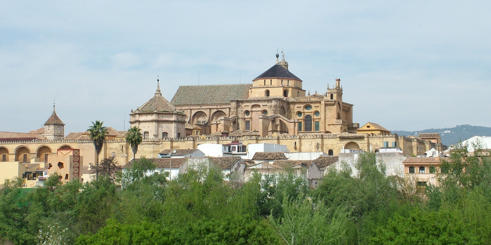
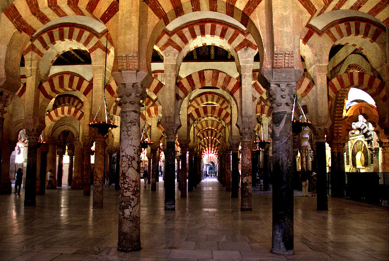

<!DOCTYPE html>
<html lang="es">

<head>
    <title>Turismo Córdoba</title>
    <meta charset="utf-8">
    <meta name="description" content="Cordoba ciudad patrimonio">
    <meta name="keywords" content="Turismo, patrimonio, viajes">
    <link
        href="https://fonts.googleapis.com/css?family=Montserrat:100,200,300,regular,500,600,700,800,900,100italic,200italic,300italic,italic,500italic,600italic,700italic,800italic,900italic"
        rel="stylesheet" />
    <link href="css/styles.css" rel="stylesheet">
</head>

</html>

<body>
    <div></div>
    <header id="header">
        <h1 id="top">Córdoba</h1>


        <nav id="nav">
            <ul>
                <li><a href="index.html">Inicio</a></li>
                <li><a href="mezquita.html">La Mezquita</a></li>
                <li><a href="casco_historico.html">Casco Historico</a></li>
                <li><a href="patios.html">Los Patios</a></li>
                <li><a href="medina_azahara.html">Medina Azahara</a></li>
                <!--<li><a href="contacto.html">Contacto</a></li>-->
            </ul>
        </nav>
    </header>
    <section id="main">
        <h2>Mezquita</h2>
        <div id= grid-a>
            

            <p class="p-c">
                Mezquita-Catedral

                La Mezquita-Catedral de Córdoba (Patrimonio de la Humanidad desde 1984) es el monumento más importante
                de todo el Occidente islámico y uno de los más asombrosos del mundo. En su historia se resume la
                evolución completa del estilo omeya en España, además de los estilos gótico, renacentista y barroco de
                la construcción cristiana.

                El lugar que hoy ocupa nuestra Mezquita-Catedral parece haber estado, desde antiguo, dedicado al culto
                de diferentes divinidades. Bajo dominación visigoda se construyó en este mismo solar la basílica de San
                Vicente, sobre la que se edificó, tras el pago de parte del solar, la primitiva mezquita. Esta basílica,
                de planta rectangular fue compartida por los cristianos y musulmanes durante un tiempo. Cuando la
                población musulmana fue creciendo, la basílica fue adquirida totalmente por Abderraman I y destruida
                para la definitiva construcción de la primera Mezquita Alhama o principal de la ciudad. En la actualidad
                algunos elementos constructivos del edificio visigodo se encuentran integrados en el primer tramo de
                Abderraman I.

                La gran Mezquita consta de dos zonas diferenciadas, el patio o sahn porticado, donde se levanta el
                alminar (bajo la torre renacentista), única intervención de Abd al- Rahman III, y la sala de oración o
                haram. El espacio interior se dispone sobre un concierto de columnas y arcadas bicolores de gran efecto
                cromático. Cinco son las zonas en las que se divide el recinto, correspondiendo cada una de ellas a las
                distintas ampliaciones llevadas a cabo.
            </p>
            
        </div>
    </section>


    <footer id="footer">
        &copy; Todos los derechos: Maria Cervilla Alcalde
        <address>Cordoba, España</address>
    </footer>
    </div>
</body>